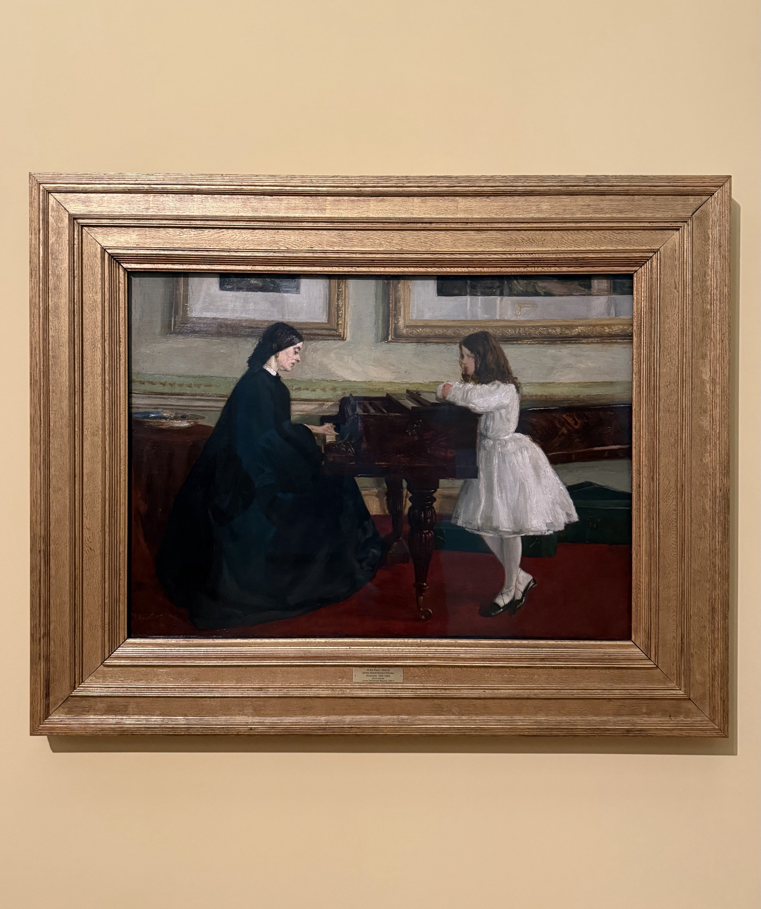

Haochen Ni
BSc Economics, University College London
I am a final-year undergraduate student in Economics at University College London. My research interests are in microeconomic theory, game theory, information economics, and information design.
I am particularly interested in using formal models to understand behaviour whose underlying mechanisms are not directly revealed by observed choice, especially when seemingly inconsistent patterns can arise from different preferences, beliefs, or latent decision states.
My current research studies partial universalisation and collective pivotality in threshold public-good environments. More broadly, I am interested in learning, belief formation, and dynamic information design.

“At the Piano” by James Abbott McNeill Whistler